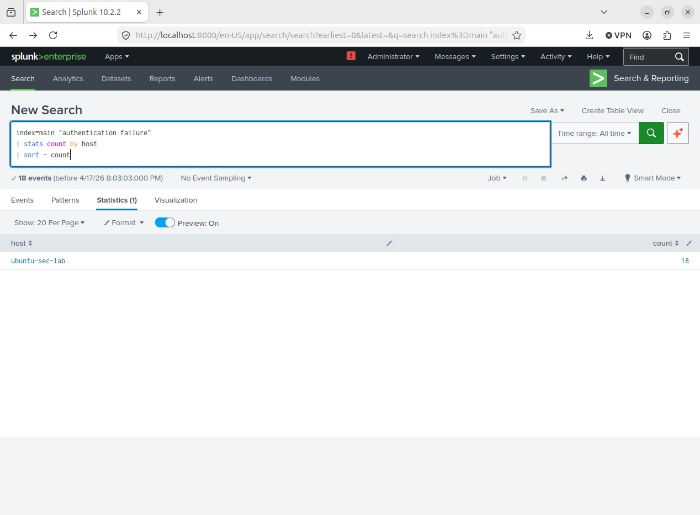
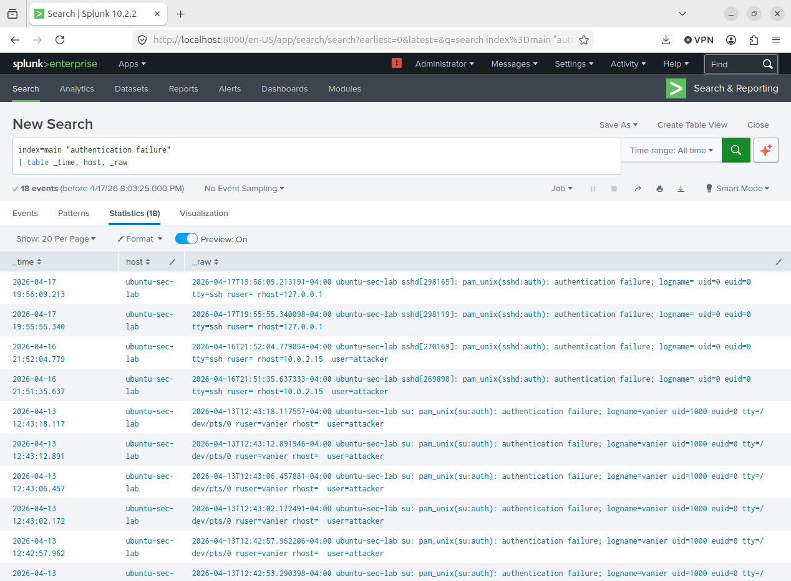
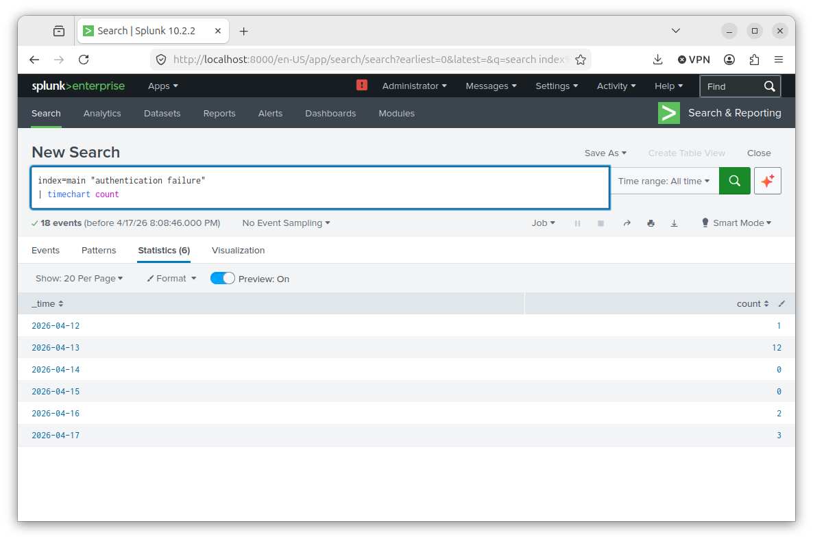

Detection Lab
SSH Brute Force Detection
Simulated repeated failed SSH login attempts and analyzed logs in Splunk to detect brute force behavior.
Cybersecurity Portfolio
I am an aspiring SOC analyst focused on detecting suspicious behavior through log analysis, SIEM tools, and hands-on lab environments. My work centers on authentication attacks, privilege escalation detection, and investigation workflows using Splunk and Linux.
Current Focus
About
My work centers on building real hands-on cybersecurity skills through labs, investigation write-ups, and detection-focused projects. I focus on identifying suspicious behavior, analyzing logs, and translating technical activity into findings that reflect real SOC analyst workflows.
Labs & Investigations
Detection Lab
Simulated repeated failed SSH login attempts and analyzed logs in Splunk to detect brute force behavior.
Investigation Lab
Analyzed auth.log and related system activity to identify login patterns and suspicious access behavior.
Monitoring Lab
Tracked sudo activity and authentication failures to identify possible privilege escalation attempts.
Investigation Insight
During my SSH brute force lab, I observed multiple failed authentication attempts from a single source, followed by a successful login. This pattern suggests a potential brute force compromise scenario, where repeated password attempts eventually led to unauthorized access.
Projects
Security Homelab
A growing project documenting Linux labs, Splunk workflows, investigative steps, and system-level security practice built to develop analyst-ready habits.
Open RepositoryStudy & Documentation
Structured notes and cybersecurity fundamentals organized for review, retention, and long-term learning.
Open RepositoryAutomation Project
A Node.js project demonstrating backend logic, API handling, async workflows, and real-time interaction through a Telegram bot interface.
View GitHubInvestigation Insight
During this lab, I simulated repeated SSH login attempts against a Linux system to replicate brute force behavior. By analyzing authentication logs in Splunk, I identified a pattern of repeated failures originating from a single host.
The data showed a spike in authentication failures within a short timeframe, indicating automated or repeated login attempts. This behavior is consistent with brute force attack techniques used to gain unauthorized access.



Skills
Splunk, dashboards, alerts, log search, detection logic
Ubuntu, auth.log analysis, users, permissions, terminal workflow
Threat detection, brute force analysis, investigations, privilege monitoring
GitHub, documentation, troubleshooting, technical support, Node.js
Contact
Aspiring SOC Analyst | Detection & Investigation